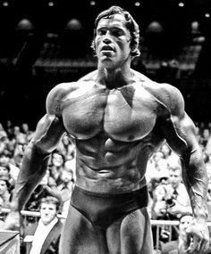

Arnold Schwarzenegger – The Austrian Oak
Arnold Schwarzenegger is arguably the most famous bodybuilder of all time and a major catalyst for the sport's popularization. Born in a small village in Austria, he relentlessly pursued his dream of moving to America and dominating the bodybuilding world. He achieved unparalleled success in the sport, winning numerous prestigious titles. Beyond bodybuilding, Arnold transitioned into a highly successful acting career and eventually served as the Governor of California.
Career Timeline
- 1947: Born in Thal, Austria
- 1967: Won Mr. Universe at age 20
- 1970: Won first Mr. Olympia title
- 1977: Published autobiography and starred in Pumping Iron
- 1982: Starred in the hit movie Conan the Barbarian
- 2003: Elected Governor of California
Key Facts
- Mr. Olympia Titles: 7 (1970–1975, 1980)
- Height: 6'2" (188 cm)
- Competition Weight: 235 lbs (107 kg)
- Nickname: The Austrian Oak
- Famous Quote: "I'll be back."

The worst thing I can be is the same as everybody else. I hate that.
— Arnold Schwarzenegger, from Total Recall: My Unbelievably True Life Story
Training Footage
Learn more about Arnold on Wikipedia.